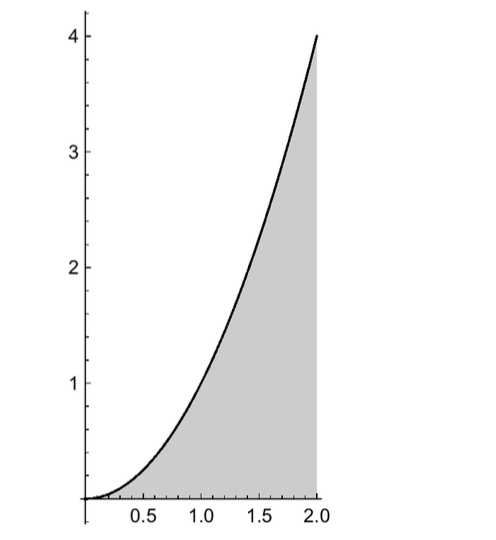
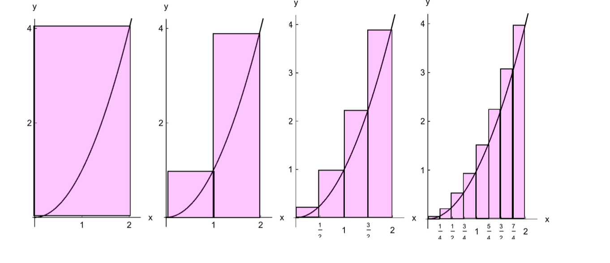

- (a)
- Approximate the shaded area using a right Riemann sum with \(n=1\) rectangles.
- (b)
- Approximate the shaded area using a right Riemann sum with \(n=2\) rectangles.
- (c)
- Approximate the shaded area using a right Riemann sum with \(n=4\) rectangles.
\(\Delta x=\dfrac {2}{4}=\dfrac {1}{2}\)
\( x_k^*=x_k=k\Delta x=k\left (\dfrac {1}{2}\right )=\dfrac {k}{2}\), for \(k=1,2,3,4\)
\(A\approx \displaystyle \sum _{k=1}^{4} f ( x_k^* ) \Delta x =f\left (\dfrac {1}{2}\right )\Delta x+ f(1)\Delta x+f\left (\dfrac {3}{2}\right )+ f(2)\Delta x=\Delta x\left (f\left (\dfrac {1}{2}\right )+f(1)+f\left (\dfrac {3}{2}\right )+f(2)\right )\)
\(A\approx \dfrac {1}{2}\left (\dfrac {1}{4}+1+\dfrac {9}{4}+4\right )=\dfrac {5}{2}+5=\dfrac {15}{2}\)
- (d)
- Approximate the shaded area using a right Riemann sum with \(n=8\) rectangles.
\(\Delta x=\dfrac {2}{8}=\dfrac {1}{4}\)
\( x_k^*=x_k=k\Delta x=k\left (\dfrac {1}{4}\right )=\dfrac {k}{4}\), for \(k=1,...,8\)
\(A\approx \displaystyle \sum _{k=1}^{8} f ( x_k^* ) \Delta x = \Delta x\cdot \displaystyle \sum _{k=1}^{8} f ( x_k^* )=\dfrac {1}{4}\cdot \displaystyle \sum _{k=1}^{8} f \left ( \dfrac {k}{4} \right )=\dfrac {1}{4}\cdot \displaystyle \sum _{k=1}^{8} \left ( \dfrac {k}{4} \right )^2= \dfrac {1}{4}\cdot \displaystyle \sum _{k=1}^{8} \dfrac {k^2}{16} = \dfrac {1}{64}\cdot \displaystyle \sum _{k=1}^{8}k^2 \)
Recall: \(\displaystyle \sum _{k=1}^{n} k^2 =\dfrac {n(n+1)(2n+1)}{6}\) Therefore
\(A\approx \dfrac {1}{64}\cdot \displaystyle \sum _{k=1}^{8}k^2 = \dfrac {1}{64}\cdot \dfrac {8(9)(17)}{6}= \dfrac {1}{8}\cdot \dfrac {3(17)}{2}=\dfrac {51}{16}\)